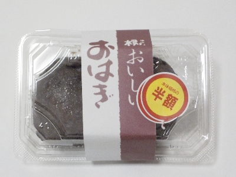
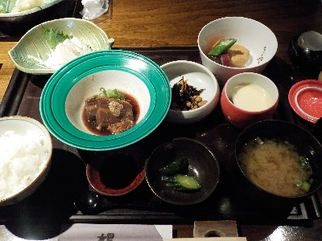

こ根っこのおいしいおはぎ。
2024/10/11

松江市にあるスーパーで購入しました。
2個入りで大きさがそろっていませんでした。手作りですね。暖かみがあっていいですね。
粒あんですがしっとりしててなめらかでした。甘さ控えめで食べやすかったです。お米の味がするのもいいですね。
和菓子っぽいおはぎより、これみたいなおはぎが好きかな。
島根県松江市千鳥町36
2024/10/11

松江市にあるスーパーで購入しました。
2個入りで大きさがそろっていませんでした。手作りですね。暖かみがあっていいですね。
粒あんですがしっとりしててなめらかでした。甘さ控えめで食べやすかったです。お米の味がするのもいいですね。
和菓子っぽいおはぎより、これみたいなおはぎが好きかな。
2024/07/13

メインの豚の角煮は肉感が強いタイプでした。美味しかったです。
いろいろ付いて1100円なのでお得ですね。
もうちょっと値段が高い天ぷらが付いたものとか、お寿司を注文される方が多かったです。そっちを頼んでもよかったかなと思いました。